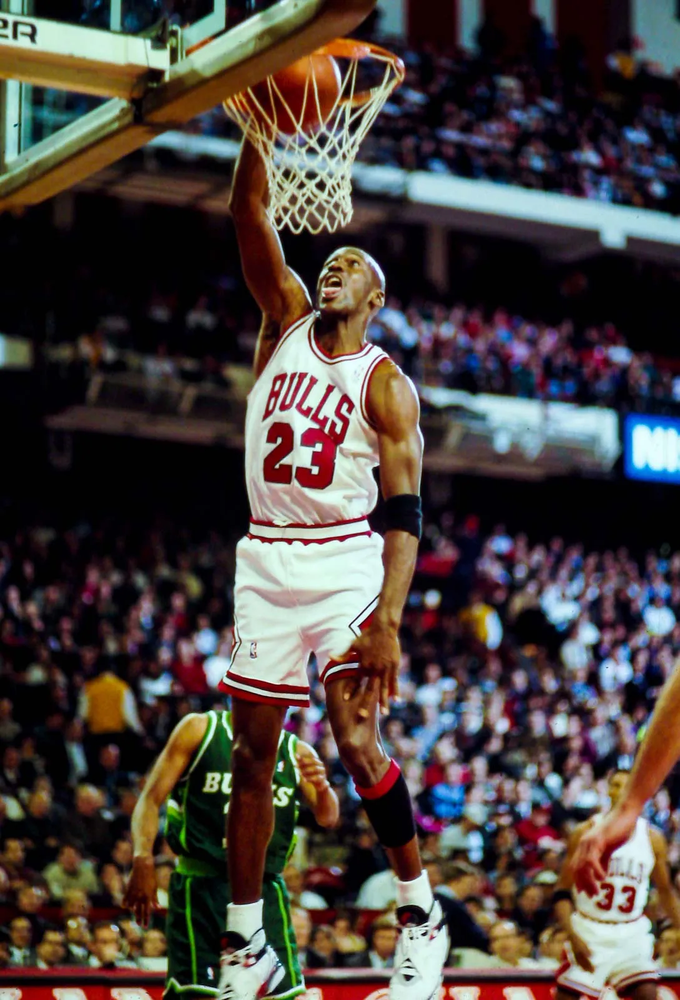

Blog Profesional de Michael Jordan
Primeros años en la NBA
Michael Jordan comenzó su carrera profesional con los Chicago Bulls en 1984. Su impacto fue inmediato...
Leer másLa era de los campeonatos
Con los Chicago Bulls, Jordan lideró el equipo a ganar seis campeonatos en los años 90...
Leer másÚltimos años y legado
Después de su retiro, Michael Jordan continuó siendo una figura influyente en el baloncesto...
Leer más